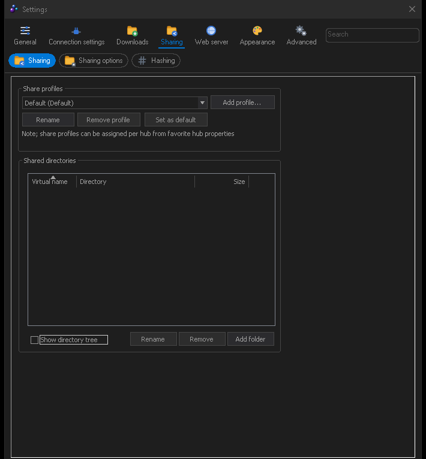

Sharing
What you give back, and who gets to see it.
Sharing is not optional politeness in direct connect — most hubs require a minimum share before they let you in, and check it on connect. This chapter covers choosing folders, hashing, profiles and slots.
Choosing what to share
Settings → Sharing lists your shared folders. Add a folder, give it
a virtual name — that is the name other people see, so a folder at
D:\media\stuff\music can simply appear as Music — and it becomes part of
your share.

A few things worth setting while you are here:
- Skiplist — patterns that are never shared. Use it to keep
.nfoclutter, partial files, thumbnails and anything private out of the index. The RAR user profile installs a comprehensive one for you. - Share hidden / system files — off by default, and best left that way.
- Follow symbolic links — be careful; a link loop can make your share enormous.
Hashing
Every shared file has to be hashed before it can be shared, because files are found by hash, not by name. The first refresh of a large share takes a while; progress shows in the status bar and in View → Hashing progress.
Settings → Sharing → Hashing controls the speed. You can cap the hashing rate so it does not saturate your disk, and choose how much of the file buffer to use. Hashing is a one-off cost per file — once a file is hashed it stays hashed, and only new or changed files are rehashed later.
File → Refresh file list rescans for new files; the toolbar has the same button. Refreshes can also run on a schedule, and FulDC++ can watch an incoming folder and refresh only that.
Share profiles
A share profile is a named subset of your share. Rather than showing everyone everything, you can build a profile per community and attach it to a hub in that hub's favourite properties.
- In Settings → Sharing, create a new profile and name it.
- Tick which of your shared folders belong in it.
- In View → Favorite hubs, open a hub's properties and select that profile.
Hubs using different profiles see genuinely different shares, and your reported share size changes to match. There is also a hidden profile for folders you want indexed for your own searching but not published anywhere.
FulDC++ only: share profiles work on older NMDC hubs too, not just ADC ones.
Slots and upload limits
Settings → Connection settings → Speed & slots sets how many people can download from you at once. More slots means each one is slower; fewer means longer queues. Three to five is a reasonable starting point on a home connection, and many hubs set a minimum.
Related options worth knowing:
Extra slots
Reserved slots you can hand out individually with /grant or the user right-click
menu, without opening a slot for everybody.
Automatic slot allocation
Let FulDC++ open more slots while your upload bandwidth is not saturated.
Upload speed limit
In Settings → Connection settings → Limits & advanced. Leaving a little headroom keeps the rest of your connection usable.
Partial sharing
Share the parts of a file you have already downloaded, before the whole thing is finished. Leave it on — it makes popular files spread far faster.
File lists
Other users browse your share as a file list. File → Browse own file list shows exactly what they see — worth a look after your first refresh, to check that nothing is in there that should not be.
Very large shares produce very large file lists. FulDC++ has a configurable ceiling on the size of a file list it will download from someone else, in Settings → Sharing → Sharing options, so one enormous share cannot tie your client up.